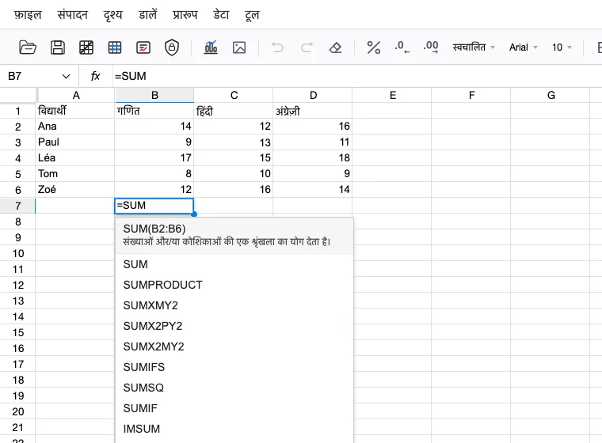
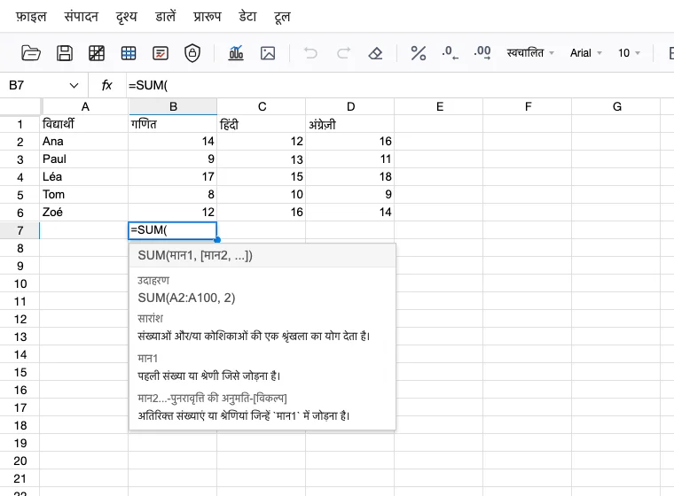
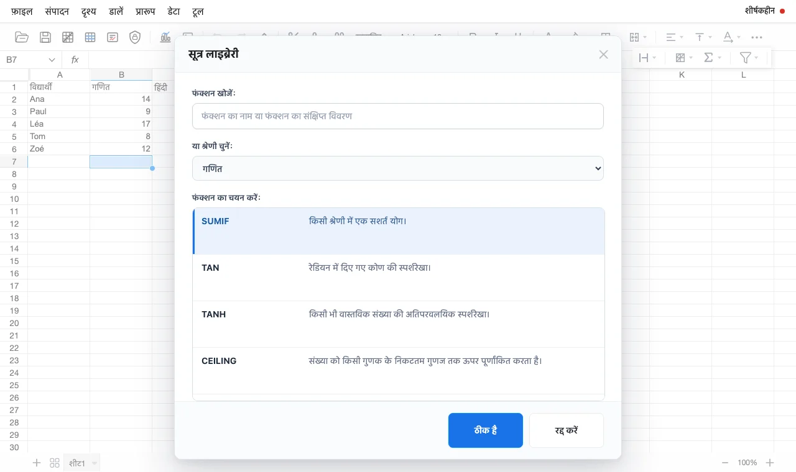

सूत्र
सूत्र लिखना
सूत्र = से शुरू होता है। उसमें संख्याएँ, उद्धरण चिह्नों में टेक्स्ट, सेल संदर्भ, संकारक और फ़ंक्शन होते हैं।
=B2*2
=(B2+C2+D2)/3
=AVERAGE(B2:B6)
="कुल: "&SUM(B2:B6)सेल परिणाम दिखाता है, सूत्र पट्टी सूत्र। बदले गए सेल पर निर्भर सेल तुरंत फिर से गिने जाते हैं।
दशमलव चिह्न बिंदु है और तर्क अल्पविराम से अलग होते हैं: =ROUND(3.14159, 2)। फ़ंक्शन के नाम छोटे या बड़े अक्षरों में लिखें: =sum(B2:B6) और =SUM(B2:B6) दोनों चलते हैं।
माउस से सेल बताना
सूत्र लिखते समय शीट के सेल पर क्लिक उसका पता डालता है, खींचना रेंज डालता है। हर संदर्भ का सूत्र और शीट पर अपना रंग होता है।
स्वतः पूर्ति
नाम के पहले अक्षरों से ही DocCells उन्हें रखने वाले फ़ंक्शन सुझाता है: देखने के लिए ↑ ↓, चुनने के लिए Enter, Tab या क्लिक। खुलते कोष्ठक के बाद सहायता तर्क याद दिलाती है।


स्वचालित योग
योग लिखता है। उसका तीर योग, औसत, गिनती, अधिकतम, न्यूनतम और सभी सूत्र देता है: वह संग्रह जहाँ फ़ंक्शन नाम, विवरण या श्रेणी से खोजा जाता है।

संकारक
| संकारक | काम |
|---|---|
+ - * / | चार संक्रियाएँ |
^ | घात: =2^10 |
% | प्रतिशत: =20%*B2 |
& | टेक्स्ट जोड़ता है: =A2&" "&B2 |
= <> | बराबर, भिन्न |
< > <= >= | तुलना |
( ) | प्राथमिकता |
घात पहले, फिर गुणा और भाग, फिर जोड़ और तुलना। =-2^2 का मान −4 है (Excel में 4)।
संदर्भ
| लिखावट | अर्थ |
|---|---|
B2 | एक सेल; भरने के साथ बदलता है |
$B$2 | वही सेल, भरने पर भी |
B$2, $B2 | स्थिर पंक्ति, स्थिर कॉलम |
B2:D6 | एक रेंज |
B:B, 2:2 | पूरा कॉलम, पूरी पंक्ति |
शीट2!B2, 'अंक 2'!B2 | दूसरी शीट का सेल |
marks | नामित रेंज |
नीचे भरने पर =B2*$B$1 का =B3*$B$1, =B4*$B$1… हो जाता है।
शर्तें
=IF(B2>=10, "उत्तीर्ण", "अनुत्तीर्ण")
=IF(AND(B2>=10, C2>=10), "हाँ", "नहीं")
=SWITCH(A2, "a", 1, "b", 2, 0)
=COUNTIF(B2:B6, ">10")
=SUMIF(A2:A6, "Ana", B2:B6)
=AVERAGEIF(B2:B6, "<10")- तार्किक मान
TRUE()औरFALSE()लिखे जाते हैं, कोष्ठकों सहित। वे TRUE और FALSE दिखते हैं। - मानदंड एक टेक्स्ट है:
">10","<>0","Ana"। वाइल्डकार्ड*और?नहीं पहचाने जाते। - खाली सेल की जाँच
=B2=""से होती है; वह 0 के बराबर नहीं है।
तालिका में खोजना
=VLOOKUP("Léa", A2:D6, 3, 0)
=INDEX(A2:A6, MATCH(MAX(B2:B6), B2:B6, 0))पहला सूत्र तालिका के पहले कॉलम में Léa खोजता है और तीसरा कॉलम देता है; अंतिम तर्क 0 सटीक मान माँगता है। दूसरा सबसे अच्छे अंक वाले का नाम देता है।
दिनांक और समय
दिनांक दिनों की संख्या है, समय दिन का अंश: सेलों में इन्हें जोड़ा-घटाया जाता है।
=A2+7
=A3-A2
=DAYS(A3, A2)
=WEEKDAY(A2, 2)DATE या TODAY से मिला दिनांक जोड़ने से पहले सेल में रखना होता है: =TODAY()+1 से #VALUE! मिलता है, पर यदि A1 में =TODAY() हो तो =A1+1 कल की तारीख देता है। परिणाम संख्या है: उसे दिनांक प्रारूप दें।
त्रुटियाँ
| दिखता है | कारण |
|---|---|
#NAME? | अज्ञात नाम: वर्तनी की भूल, न गिना जाने वाला फ़ंक्शन, बिना कोष्ठक TRUE, बिना उद्धरण टेक्स्ट |
#VALUE! | अनपेक्षित प्रकार: संख्या की जगह टेक्स्ट |
DIV/0 | शून्य या खाली सेल से भाग |
#N/A | मान नहीं मिला (MATCH, VLOOKUP), या DocGeo के बाहर GEO |
#REF! | सेल या शीट मौजूद नहीं |
#NUM! | प्रांत से बाहर की संख्या: =SQRT(-1) |
#ERROR! | गलत लिखा सूत्र, या न गिना जाने वाला फ़ंक्शन |
IFERROR फ़ंक्शन की त्रुटि (#N/A, #NUM!) बदलता है: =IFERROR(VLOOKUP(E1, A2:D6, 2, 0), "अनुपस्थित")। गणना की त्रुटि (DIV/0, #VALUE!) नहीं बदलता: शून्य से भाग रोकने के लिए भाजक जाँचें, =IF(B2, B3/B2, ""), जो शून्य और खाली सेल दोनों पर चलता है।